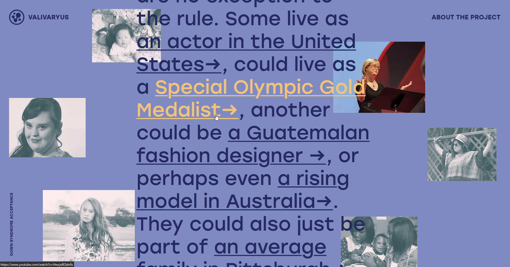

On-Going
The Valivaryus Project

It's a big ask. The Valivaryus Project is an on-going project that I wish to use to tackle misunderstandings for various neurodivergencies. The initiative I created as a part of my degree project addresses Down Syndrome in particular due to my sister's personal experiences and my own observations over the course of our lives. Initially, this was a pointed effort to address the lack of funding in public education settings. My research and interviews led me to develop and design a piece that would address common-day pain points to tackle where the lack of awareness and funding shortfalls really start to rear their heads.

